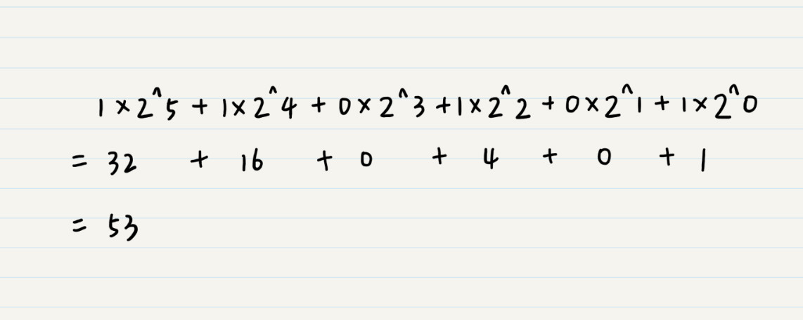
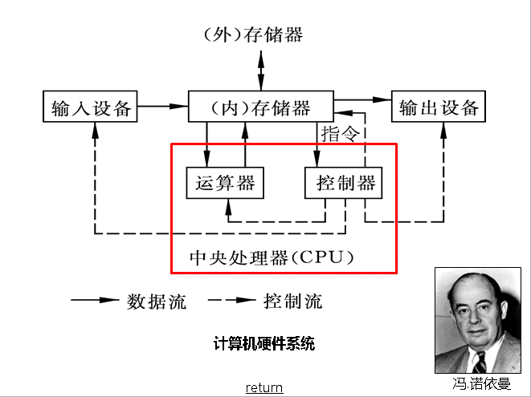
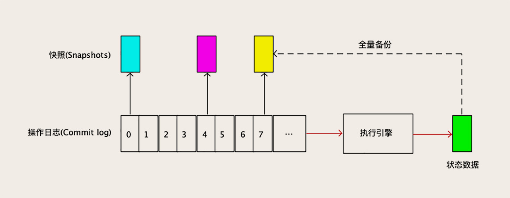

# 从哲学层面浅谈计算机学习方法论
之前思考和总结过两篇关于学习的文章，（《如何快速且深入的学习一门新技术》，《微服务学习导航》），个人感觉还是言不尽兴，太过肤浅了。所以这篇文章会从更高的形而上的角度来审视自己的学习。其中的思想来源比较复杂，主要是受了老子、王东岳、李善长、古典文学和计算机科学等的影响，不知其所踪。
# 学什么？
# 抽象模型
庄子说过吾生有崖，知无涯。以有限的生命去学习无尽的知识是很愚蠢的。所以，学习的终极目标一定不是知识本身，因为知识是表象的、不稳定、会过时。那么我们应该学什么，什么东西才是永恒的？也许我们会有很多见解，比如学习哲学，或者叫哲科；或者学习方法论；或者学习抽象模型等等…
这些抽象模型的完美体现就是我们经常看到的数学公式，公式好比万能工具，通过它我们可以知道宇宙和自然是如何规律运转的。 现实中，我们会发现各个学科都有自己的抽象模型，这些模型好比天上的繁星，有相似的，更多的是各不相同。所以，认知结构的拓展其实就是对模型边界的拓展，我们拥有的模型越多，我们的认知越丰富。
对于计算机来说，什么是那个不变的宗呢？
# 计算机模型
从物理角度看，晶体管的电容只有两种状态：开和关；从光传输的规律看，电压只有高低两种电压。这对应了数字世界的0和1（量子计算除外）。这里多加一个或者多个电容，多加一条或者多个线，就有了2的4/8/16/64种状态。而且随着纳米技术的发展，多核CPU的增加，5G高带宽的出现，从物理层面可以表示和传输的状态会越来越多。
不管虚拟世界多么纷繁复杂，追溯原点，从物理角度，我们可以从电容开始；从数学层面我们从二进制开始；从哲学层面，我们从阴阳开始。
计算机通电的过程很像宇宙大爆炸，接下来就是比特之旅。比特在旅途过程，从磁盘->总线->内存->CPU，不停的移动。一个比特经过一个函数工厂，可能会产生80个比特，再绕地球一圈，可能又会增加了n次方的比特。
所以，这是一个由哲学构建的稳定的底层逻辑的世界；这是一个由数学构建的有无穷状态表示法的比特世界；这是一个以波粒为基础的极致高效的世界。

# 冯-诺伊曼体系
比如，从组成计算机的金字塔来看，该体系到现在也是稳定的，不管是PC还是移动还是正在发生的物联网架构。计算机的核心部件还是这么几样东西：运算器、存储器、控制器，输入输出设备。不同的是在性能，功耗等变得更加强大。

# 编译原理
如果你要了解各种计算机语言的底层原理，那么对语法分析，词法分析，语义分析，正则表达式，有限状态机的知识点是绕不开的话题，所以说编译原理其实也没有怎么变化过。
所以，不管是火热的的go，rust，还是老牌的java、c/c++、python，或者是js、c#等语言，我们其实不应该去纠结千差万别的语法，而是底层的编译方法。
不管是以后的语言如何变化，是属于脚本语言还是编译语言，无论他们的语法如何奇怪，你应该知道他们都要构造语法树，都要做词法分析，语义解析，都要把语法树翻译成二进制语言。
# 分布式原理
分布式的存储系统他们实现数据复制的方法是完全一样的，该原理能查到的最早的出处是 1978 年 Lamport 的一篇论文《The Implementation of Reliable Distributed Multiprocess Systems》。
1978年啊，同志们，那时候我们都还没出生呢！这么老的技术到今天仍然在被广泛地应用！无论应用技术发展的多快，实际上解决问题的方法，或者说是理论基础，一直是没什么变化的。所以，你在不断学习新的应用技术的同时，还需要多思考、总结和沉淀，这样会让你学习新技术的时候更快更轻松。
不管在mysql，sqlserver关系型数据库里面，还是在redis，mongo等非关系型存储引擎里，他们都在用数据复制的状态机原理。
再比如，许多搜索引擎（比如ES）和消息队列（比如Kafka，RabbitMQ）也在互相抄作业，而且以后的作业会随着所谓的“新技术”这个伪概念的不断出现，会越抄越频繁。

# 方法论
# 不可知论
爱因斯坦说宇宙就是一个怀表，里面是什么，我一无所知。不可知论的意思不应该是我们真的一无所知，而是假设Default我们一无所知，然后再重新梳理自己思想的真伪。它是一种对基点真伪的追问。因为世界是动态的，五官是不可靠的，固有的知识是有漏洞的，但是我们又喜欢用经验来衡量和决策。所以，如果能彻底怀疑过往的一切，假设我们的思想都是错的，那么对真理的追求会更近一步。
我们可以举个例子，随着业务膨胀和并发的增加，我们通过修修补补的方式以及无法抵抗日益腐烂的代码，那么唯有重新审视底层架构，甚至推倒重来才能暂时解决当前的业务需要。至于未来系统会如何演化，不可知。
不可知应该是站在不可知的角度去追求可知，是一种虔诚的学习态度。
（不可知论的提出者托马斯·亨利·赫胥黎）
# 普遍怀疑
这里的普遍怀疑不是为了怀疑而故作高深，因为宇宙是浑然一体的，是混沌的，分科命名不是永恒的名(名可名非常名)。所以，当分科作为一个角度，必然是横看成岭侧成峰，你怎么可能是永恒的呢？
普遍怀疑把本我和思想进行脱钩，对被思想占领的肉体和思想本身进行分别求真。
笛卡尔说肉体是无法被证明存在(bing)，我们怎么能确定自己不是活在虚拟世界里呢，也就是说我们怎么能知道到底自己是梦里的蝴蝶变的还是我们变成梦里的蝴蝶呢？但是，这个梦却是真实的，只有思想者是真实的，最后他提出了那句我思我在（i think，therefore i am）的名言。
普遍怀疑其实就是给自己的思想洗澡，把思想的苹果全部倒出来，包括烂苹果和好苹果，然后重新梳理和归类。爱因斯坦把牛顿的苹果倒出来，发现万有引力定律并不适应微观世界，最后提出相对论。可见普遍怀疑是破解集体信念和创新的重要工具。
（老子对着老虎传道的深意：“传道是高度危险的，道是不能说，也是不可说的”）
# 思想≠我
当我们被批判的时候，我们会本能的情绪化，因为我们把自己和思想视为一体，对我们观念的不认可就是对于自己的不认可，所以我不爽了！
试想，我就是思想吗？李善长老师说：“不是我拥有思想，而是思想占有了我。”，我的理解是我们的思想不过是先人智慧的影子，我们长期使用后和身体融化一体罢了。
所以问题来了，我们到底要为自己辩护，还是为自己的思想辩护？如果是为自己的思想辩护，为什么要情绪化呢？如果自己的认知本身是有问题的，不应该“闻过则喜”吗？
当我们因为别人的不认可而情绪化，其实很多时候就是把思想和我等同起来，这对于学习和进步是一种巨大的禁锢，因为思想不等于我们的肉体。
（笛卡尔）
# 独立思考
谈到独立思考，我们先从智人演化过程的从众心态讲起。在远古社会，从众的目的是为了安全感，刚开始可能是为了抵御猛兽，后面是为了族群的认同。从众的负面效应是一种非理性的无知，集体无意识的盲从。因为追求安全和族群的认可，会违背自我的思想扭曲，从而失去了独立判断的能力。
虽然这种后果是很可怕的，但直到现在，这种抱团盲从的现象还会随处可见，因为对于安全感的需求在组织当中还是存在的。如果不能深刻得认识这种现象，那么自己的思考也是危险。
独立思考是痛苦的。很多人宁可死也不愿意思考；王兴说：很多人为了不去思考，可以做任何事情。
个人认为，这里的思考是指体系化、模型化、抽象化、理性化的逻辑思考，并不是指我们日常的感性思维或者形象思维。
代表计算机世界的思维方式，更切确的说应该是数学思维，是对万事万物进行数字建模后的一种面向产业和应用的计算，所以数感、数学思维是计算机学习的内功，虽然当下并不明显。
# 总结
所以，从学习目标来看，我们应该要学习的不是知识本身，而是抽象的知识模型，好比那把万能钥匙，模型可以打开各自知识的锁头；从学习的方法来看，我们可以使用普遍怀疑、不可知论，思想和本我的脱钩、去除盲从惯性来思考，对思想本身进冲洗，对逻辑思维本身进行审视和质疑。借用巴菲特的那句话：“如果哪一年我没有破坏一个我以前特别相信的观念，这一年我算白过了”。
# (^^)打个赏喝个咖啡(^^)
文章来源：https://www.cnblogs.com/jackyfei/p/13862607.html